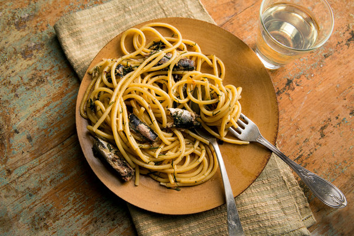

Pasta Sardine Recipe

This quick and easy version of the classic Sicilian pasta dish comes together in about 20 minutes with ingredients you probably already have in your pantry and fridge. You can pick up anything you're missing at the corner deli.
Ingredients:
- ¼ cup extra virgin olive oil
- ½ cup bread crumbs, ideally made from stale bread
- 1 onion, chopped
- Freshly ground black pepper
- 1 pound long pasta, like perciatelli
- 1 teaspoon grated lemon zest
- 2 tablespoons drained capers
- 2 cans sardines packed in extra virgin olive oil (about 1/2 pound)
- ½ cup chopped fresh parsley, plus more for garnish
Instructions:
- Bring a large pot of water to a boil and salt it. Put half the oil (2 tablespoons) in a medium skillet over medium heat. When it’s hot, add the bread crumbs and cook, stirring frequently, until golden and fragrant, less than 5 minutes, and then remove. Add the remaining oil and the onion to the pan, sprinkle with salt and pepper, and cook, stirring occasionally, until softened, about 5 minutes.
- Meanwhile, add the pasta to the boiling water and cook until just tender; drain, reserving some of the cooking liquid. Turn the heat under the onions to medium-high and add the lemon zest, capers and sardines; cook, stirring occasionally, until just heated through, about 2 minutes.
- Add the pasta to the sardine mixture and toss well to combine. Add the parsley, most of the bread crumbs and some reserved water, if necessary, to moisten. Taste and adjust seasoning, garnishing with more parsley and bread crumbs.
Home